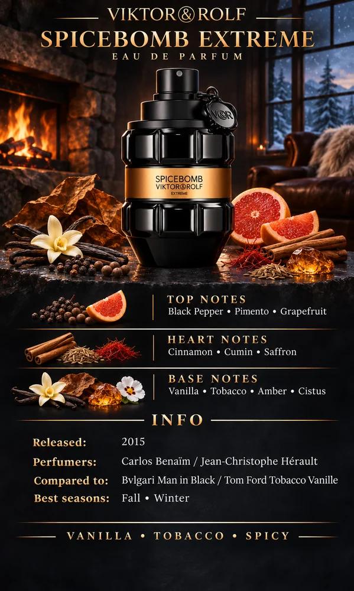
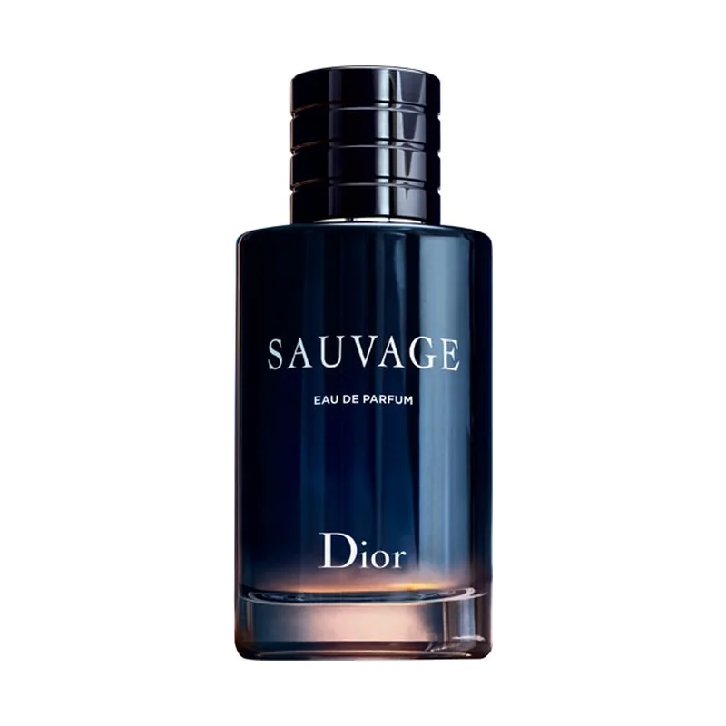

Viktor & Rolf
Spicebomb Extreme
β Beta Designer · 2015 In collection
Randy's rating8.75/10
Public rating9/10
Overall R22.18/25
Normalized N0.887
R = 8.75 × 1.3 + 9 × 1.2 = 22.18 of 25 · N = 22.18 ÷ 25 = 0.887 How scores work
Notes
Top notes
- black pepper
- pimento
- grapefruit
Heart notes
- cinnamon
- cumin
- saffron
Base notes
- vanilla
- tobacco
- amber
- cistus
Details
| House | Viktor & Rolf |
|---|---|
| Type | Designer · β Beta |
| Concentration | — |
| Released | 2015 |
| Perfumer | Carlos Benaïm and Jean-Christophe Hérault |
| Scent family | Spicy, Amber & Resin, Sweet & Gourmand |
| Best seasons | Fall, Winter |
| Similar to | Bvlgari Man in Black Tom Ford Tobacco Vanille |
Sources
Fragrantica 4.48/5 (about 9.0/10) from 17,795 votes; Parfumo 8.4/10 from 6,804 ratings, ranked #7 in men's perfume. Strong winter staple consensus; rounded to 9. Checked 2026-11-06.
Other Suggestions
-

DiorSauvage Eau de ParfumRandy9Public 8N 0.852 -
 Salvatore FerragamoUomo Signature Eau de ParfumRandy7.5Public 8N 0.774
Salvatore FerragamoUomo Signature Eau de ParfumRandy7.5Public 8N 0.774 -
 Jean RishAzul Pour Homme Eau de ToiletteRandy5Public —N —
Jean RishAzul Pour Homme Eau de ToiletteRandy5Public —N — -
 Yves Saint LaurentBabycat Raw Bourbon Eau de ParfumRandy—Public 9N —
Yves Saint LaurentBabycat Raw Bourbon Eau de ParfumRandy—Public 9N — -
 ChanelBleu de Chanel ParfumRandy9.5Public 9N 0.926
ChanelBleu de Chanel ParfumRandy9.5Public 9N 0.926